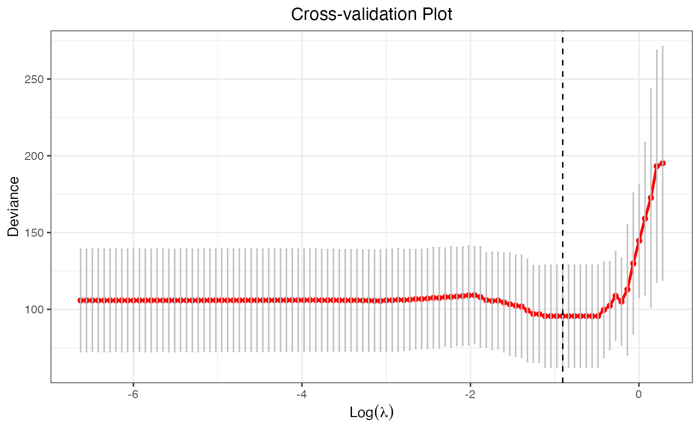

An Introduction to glmtlp
Chunlin Li, Yu Yang, Chong Wu
October 02, 2024
glmtlp.RmdIntroduction
glmtlp fits generalized linear models via penalized
maximum likelihood. It currently supports linear and logistic regression
models. The regularization path is computed for the l0, l1, and TLP
penalty at a grid of values for the regularization parameter lambda
(for l1 and TLP penalty) or kappa
(for l0 penalty). In addition, the package provides methods for
prediction and plotting, and functions for cross-validation.
The authors of glmtlp are Chunlin Li, Yu Yang, and Chong
Wu, and the R package is maintained by Chunlin Li and Yu Yang. A Python
version is under development.
This vignette describes basic usage of glmtlp in R.
Quick Start
In this section, we go over the main functions and outputs in the package.
First, we load the glmtlp package:
We load a simulated data set with continuous response to illustrate the usage of linear regression.
data(gau_data)
X <- gau_data$X
y <- gau_data$yWe fit three models by calling glmtlp with
X, y, family="gaussian" and three
different penalty. The returned fit is an
object of class glmtlp that contains all relevant
information of the fitted model for further use. Users can apply
plot, coef and predict methods to
the fitted objects to get more detailed results.
fit <- glmtlp(X, y, family = "gaussian", penalty = "tlp")
fit2 <- glmtlp(X, y, family = "gaussian", penalty = "l0")
fit3 <- glmtlp(X, y, family = "gaussian", penalty = "l1")We can visualize the coefficients and the solution path by executing
the plot method. The output is a ggplot
object. Therefore, the users are allowed to customize the plot to suit
their own needs. The plot shows the solution path of the model, with
each curve corresponding to a variable. Users may also choose to
annotate the curves by setting label=TRUE.
xvar is the index variable to plot against. Note that for
“l1” or “tlp” penalty, xvar could be chosen from
c("lambda", "log_lambda", "deviance", "l1_norm"), and for
“l0” penalty, xvar could be chosen as
"kappa".
plot(fit, xvar = "lambda")
We can use the coef function to obtain the fitted
coefficients. By default, the results would be a matrix, with each
column representing the coefficients for every
or
.
The users may also choose to input the desired value of
or
.
Note that the user-supplied
or
parameter should be in the range of the parameter sequence used in the
fitted model.
coef(fit)...
## 1.32501 1.23571 1.15242 1.07475 1.00232 0.93477
## intercept -0.2428484 -0.1352757 -0.0235558 -0.02355059 -0.05190855 -0.05192106
## V1 0.0000000 1.2224980 1.2400538 1.24005913 1.27181076 1.27178077
## V2 0.0000000 0.0000000 0.0000000 0.00000000 0.00000000 0.00000000
## V3 0.0000000 0.0000000 0.0000000 0.00000000 0.00000000 0.00000000
## V4 0.0000000 0.0000000 0.0000000 0.00000000 0.00000000 0.00000000
## V5 0.0000000 0.0000000 0.0000000 0.00000000 0.00000000 0.00000000
## V6 0.0000000 0.0000000 0.0000000 0.00000000 0.93236905 0.93231995
## V7 0.0000000 0.0000000 0.0000000 0.00000000 0.00000000 0.00000000
## V8 0.0000000 0.0000000 0.0000000 0.00000000 0.00000000 0.00000000
...
coef(fit, lambda = 0.1)...
## intercept V1 V2 V3 V4 V5
## 0.03012329 1.25295108 0.00000000 -0.18639467 -0.15726983 -0.19310409
## V6 V7 V8 V9 V10 V11
## 0.91543631 0.00000000 0.01275199 0.00000000 0.70521331 0.19432176
## V12 V13 V14 V15 V16 V17
## 0.01640360 0.00000000 0.17320713 1.16204702 0.00000000 0.00000000
## V18 V19 V20
## 0.00000000 -0.19471461 0.94229082
NA
NA
...In addition, we can make predictions by applying the
predict method. For this, users need to input a design
matrix and the type of prediction to be made. Also, users can provide
the desired level of regularization parameters or the indices of the
parameter sequence. If neither is provided, then the prediction will be
made for the whole lambda or kappa sequence.
predict(fit, X[1:5, ], lambda = 0.1)## [1] 0.09972438 2.66195238 -1.33516956 0.33721013 -2.63615326
predict(fit, X[1:5, ], which = 10) # the 10th lambda in the lambda sequence## [1] 0.1906092 2.2279251 -1.4255474 0.9313526 -2.8151620Cross-validation can be implemented by cv.glmtlp to find
the best regularization parameter. cv.glmtlp returns a
cv.glmtlp object, a list with all the ingredients of the
cross-validated fit. Users may use coef,
predict, and plot to further check the
cross-validation results.
cv.fit <- cv.glmtlp(X, y, family = "gaussian", penalty = "tlp")The plot method will plot the deviance against the
parameter sequence. The vertical dashed line shows the position of the
index where the smallest CV error is achieved, and users may also choose
to omit it by setting vertical.line = FALSE. Again, the
output is a ggplot object, so users are free to make
modifications to it.
plot(cv.fit)
The coef and predict method by default use
the parameter that gives the smallest CV error, namely,
which = cv.fit$idx.min.
coef(cv.fit)## intercept V1 V2 V3 V4 V5
## -0.009695669 1.240195285 0.000000000 0.000000000 0.000000000 0.000000000
## V6 V7 V8 V9 V10 V11
## 0.883162055 0.000000000 0.000000000 0.000000000 0.725706691 0.000000000
## V12 V13 V14 V15 V16 V17
## 0.000000000 0.000000000 0.000000000 1.125977511 0.000000000 0.000000000
## V18 V19 V20
## 0.000000000 0.000000000 0.981387932
predict(cv.fit, X[1:5, ])## [1] 0.1906096 2.2279220 -1.4255447 0.9313487 -2.8151577References
Li, C., Shen, X., & Pan, W. (2021). Inference for a large directed graphical model with interventions. arXiv preprint arXiv:2110.03805. https://arxiv.org/abs/2110.03805.
Shen, X., Pan, W., & Zhu, Y. (2012). Likelihood-based selection and sharp parameter estimation. Journal of the American Statistical Association, 107(497), 223-232. https://doi.org/10.1080/01621459.2011.645783.
Shen, X., Pan, W., Zhu, Y., & Zhou, H. (2013). On constrained and regularized high-dimensional regression. Annals of the Institute of Statistical Mathematics, 65(5), 807-832. https://doi.org/10.1007/s10463-012-0396-3.
Tibshirani, R., Bien, J., Friedman, J., Hastie, T., Simon, N., Taylor, J., & Tibshirani, R. J. (2012). Strong rules for discarding predictors in lasso‐type problems. Journal of the Royal Statistical Society: Series B (Statistical Methodology), 74(2), 245-266. https://doi.org/10.1111/j.1467-9868.2011.01004.x.
Yang, Y. & Zou, H. A coordinate majorization descent algorithm for l1 penalized learning. Journal of Statistical Computation and Simulation 84.1 (2014): 84-95. https://doi.org/10.1080/00949655.2012.695374.
Zhu, Y., Shen, X., & Pan, W. (2020). On high-dimensional constrained maximum likelihood inference. Journal of the American Statistical Association, 115(529), 217-230. https://doi.org/10.1080/01621459.2018.1540986.
Zhu, Y. (2017). An augmented ADMM algorithm with application to the generalized lasso problem. Journal of Computational and Graphical Statistics, 26(1), 195-204. https://doi.org/10.1080/10618600.2015.1114491.